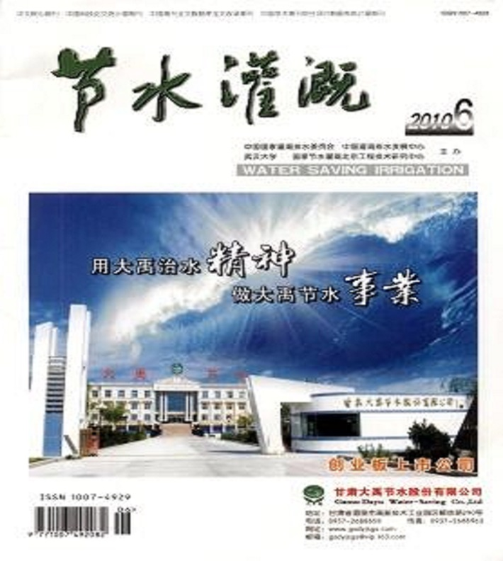

节水灌溉
期刊名称：节水灌溉 主办单位：中国国家灌溉排水委员会;中国灌溉排水发展中心;武汉大学;国家节水灌溉北京工程技术研究中心 国内刊号：42-1420/TV 国际刊号：1007-4929 出刊日期：月刊 期刊级别： 中文核心期刊(2011) 中文核心期刊(2008) 中文核心期刊(2004)

期刊简介 《节水灌溉》杂志是中国节水灌溉专业领域唯一向国内外公开发行的技术类刊物。创办的宗旨是：在中国大力宣传、推广节水灌溉技术，准确及时地传递国内外有关节水灌溉技术研究的新动态、新成果和新信息；既能满足广大科技人员获取信息指导其科学研究的要求，又能满足广大管理人员和操作人员学习理论应用于实际工作的要求。先后多次获得国家水利部、湖北省优秀期刊奖；入选“中文核心期刊”、“中国科技论文统计源期刊”、“中国期刊全文数据库全文收录期刊”、“中国学术期刊综合评价数据库统计源期刊”。 主要栏目 试验研究、工程技术、工程管理、技术讲座、国外动态、设备与市场、简讯 期刊信息 主管单位：水利部 主办单位：中国国家灌溉排水委员会；中国灌溉排水发展中心；武汉大学；国家节水灌溉北京工程技术研究中心 主编：李远华 ISSN：1007-4929 CN：42-1420/TV 地址：湖北武汉武汉大学二区 邮政编码：430072 电话：027-68776133; Email：jieshuiguangai@188.com